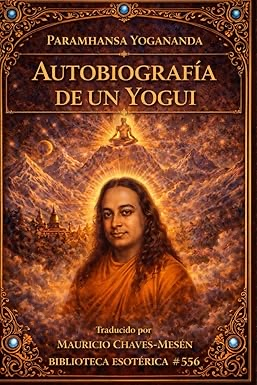

Geometría del Alma
La vida de Ibo Bonilla narrada con el ritmo de una novela. De niño campesino a diseñador de la escultura más alta de Costa Rica, la Flor de la Vida más grande del mundo, y una arquitectura donde PI, FI y Euler se vuelven frecuencias vivas.

La Autobiografía de Nikola Tesla: Mis Invenciones
El mayor inventor de la historia en sus propias palabras. Tesla describió en 1919 cómo había concebido el internet, los drones y la electricidad inalámbrica gratuita — décadas antes de que existieran. Traducida al español por Mauricio Chaves-Mesén.
Descripción, guías visuales y más
Autobiografía de un Yogui
El clásico espiritual que inspiró a Steve Jobs, George Harrison y millones de buscadores. Un viaje íntimo al corazón de la India: milagros, encuentros con los grandes santos y las revelaciones de una vida consagrada a la verdad. Traducida por Mauricio Chaves-Mesén.
Autobiografía de Benjamin Franklin
El genio fundador de América en sus propias palabras — inventor, diplomático y estadista que narra con ingenio cómo un niño de familia humilde llegó a ser el hombre más influyente de su tiempo.
Próximamente
Meditaciones de Marco Aurelio
Las reflexiones personales del emperador estoico más poderoso del mundo antiguo, escritas para sí mismo sin intención de publicarse. Un tratado atemporal sobre virtud, fortaleza y el arte de vivir con integridad.
Próximamente